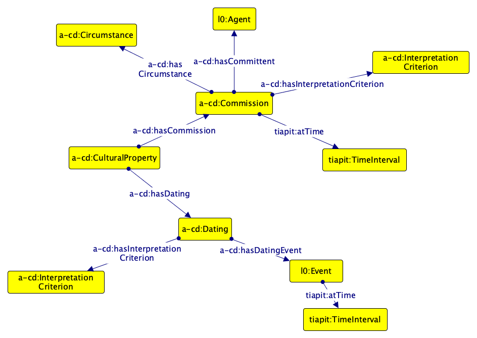
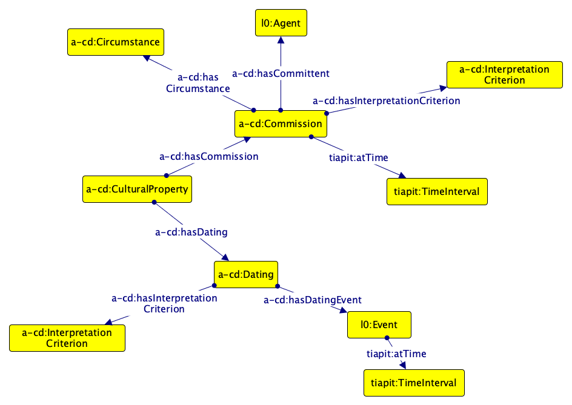

ArCo v1.0 modules
This section briefly illustrates all the main concepts that ArCo network consists of. For a detailed description, refer to the "Ontologies" section of the main page. Both the modeling choices and the vocabulary are to be considered stable.
ArCo module (arco:)
This module is the root of the network: it imports all the other modules. Moreover, it formally represents top-level distinctions for the Cultural Heritage domain. The first diagram shows the hierarchy of cultural properties. The top-level class arco:CulturalProperty is modeled as a partition of two classes: arco:TangibleCulturalProperty and arco:IntangibleCulturalProperty. arco:TangibleCulturalProperty is further specialized in arco:MovableCulturalProperty (e.g. a painting) and arco:ImmovableCulturalProperty (e.g. an archaeological site). Additional, more specific types are defined down the hierarchy.
The second diagram represents the archaeological material, which is part of a lot of archaeological materials.
In this module are also defined different types of categories used to classified different types of cultural properties (e.g. arco:HornbostelSachsClassification for a musical instrument, arco:PhotographicHeritageClassification for a photograph, etc.)
Core module (core:)
This module represents general-purpose concepts orthogonal to the whole network, which are imported by all other ontology modules. This module reuses a number of patterns (e.g. the part of pattern, the classification pattern, the situation pattern, etc.).
Denotative Description module (a-dd:)
This module encodes the characteristics of a cultural property, as detectable and/or detected during the cataloguing process and measurable according to a reference system.
The first diagram represents the: conservation status (e.g. good, bad, decent), the cultural property type (e.g. Benedectine church), the functional scope (e.g. magical function), the cultural property designation, the iconographic and decorative apparatus (e.g. the set of iconographic representations on a cultural property).
The following diagram shows the communication medium of an object (e.g. an intangible cultural property), defined by the communication medium type (e.g.: verbal, written, instrumental), the implementation method, the number of voices or instruments involved, etc.
The third diagram represents the measurements of a cultural property, members of an a-dd:MeasurementCollection (pattern collection), while the fourth one depicts the a-dd:CulturalEntityTechnicalStatus, intended as a situation in which a cultural entity has some technical characteristics (e.g. is square-shaped). Each characteristic is classified by a a-dd:TechnicalConcept (e.g. the a-dd:Shape). These concepts are used in the a-dd:CulturalEntityTechnicalDescription, that is the conceptualization of the relevant technical characteristcs of a cultural entity. The pattern DescriptionAndSituation is used.
The last diagram of this module represents the elements affixed on a cultural property (e.g. emblems, stamps, inscriptions) and the accessibility (the possibility to reach or enter that cultural property, for example for cataloguing activities) and the availability (wheter the cultural property is available or not e.g. theft, destruction) of a cultural property.
Context Description module (a-cd:)
This module represents attributes that do not result from a measurement of features in a cultural property, but are associated with it.
The first diagram shows the authorship attribution (preferred or alternative) and the cultural scope attribution. The second diagram represents the dating(s) of a cultural property and its commission.
 

The third diagram models the acquisition (a situation in which a cultural property is acquired, passing from an owner to another, and has a particular legal situation) and the change of availability (after e.g. theft, distruction, rescue, etc.) of a cultural property.
The following diagram shows the situation (a-cd:RelatedWorkSituation) in which a cultural property has a relation with other works (e.g. copies, forgeries, etc.) or other cultural properties.
The fifth diagram presents the attribution of a responsibility to an agent, relating to the activities of production and dissemination of photographic heritage (e.g.: committent, editor, printer, dedicatee, etc.). The next one models interventions and surveys on a cultural property.
In the following diagrams are represented: export import certifications; copyright; legal situation (current owner); urban planning instruments; inventories, protective measures, musician and musical ensemble (for a musical instrument); age of death and sex interpretations (for an anthropological material); circumstances and occasions related to intangible cultural heritage; biological taxon (for an anthropological material).
Location module (a-loc:)
This module addresses spatial and geometrical information. A cultural property may have multiple locations, motivated by different perspectives: history, storage, finding, etc. Sometimes they coincide, sometimes they do not. Those perspectives are represented by the class a-loc:LocationType. A certain location type of a cultural property holds during a time interval. This concept is modeled by a-loc:TimeIndexedTypedLocation, which specialises the TimeIndexedSituation pattern. Along with this model, the first diagram show the geometry and coordinates of the location, reusing the CLV module of OntoPiA.
In the following diagram are represented the elements that allow to identify the location of a stratigraphic record: area, room, square.
The last diagram of this module shows the cadastral identity of a cultural property, e.g. the cadastral unit in which the cultural property is located, and the related cadastral entities (e.g. cadastral folio).
Catalogue module (a-cat:)
This module provides means to represent catalogue records, and link them to the cultural properties they are a record of. This models are based on the Italian General Catalogue of Cultural Heritage. A a-cat:CatalogueRecord can have more than one a-cat:CatalogueRecordVersion (pattern Sequence). A a-cat:CatalogueRecord is associated to a a-cat:CataloguingLevel (the level of detail regarding the information gathered by the cataloguer), and to an access profile (related to a a-cat:PrivacyLevel). In the following diagram are also represented records describing a cultural property for purposes other than cataloguing cultural heritage (a-cat:CulturalPropertyRecord), a-cat:InformationForm and a-cat:AdditionalForm.

Cultural Event module (a-ce:)
This module contains information of cultural events involving a cultural property. In the first diagram are represented recurrent events, as collections of events recurring with periodic time intervals (e.g. particular types of demoethnoanthropological heritage such as an two-year traditional ceremony, or recurrent cultural heritage festivals).
The last diagram shows the reuse and specialisation of Cultural-ON for cultural events involving cultural properties (e.g. exhibitions).